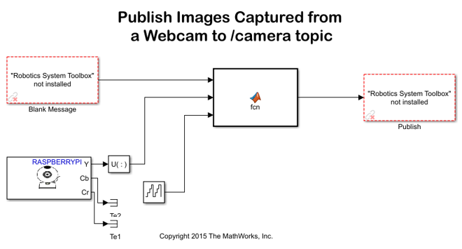
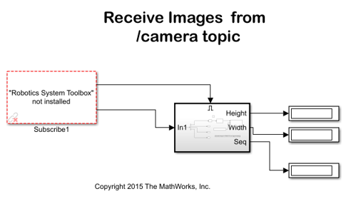

Stream Images from Raspberry Pi using Robot Operating System (ROS)
This example shows you how to stream images captured from a webcam on Raspberry Pi board to the host computer using ROS communication interface.
Contents
Introduction
In this example, you will stream images from your Raspberry Pi board to your host computer using ROS Publish blocks. You will use ROS MATLAB command line interface to display images on your host computer.
Prerequisites
- This example requires Robotics Toolbox™ and Computer Vision System Toolbox™.
Required Hardware
To run this example you need the following hardware:
- Raspberry Pi board
- Raspberry Pi Camera Board or a compatible Webcam
We strongly recommend a Raspberry Pi 2 board when working with ROS.
Task 1 - Connect Camera
In this task, you will connect a USB camera or a Raspberry Pi camera module to your Raspberry Pi hardware and check if the camera was detected properly by the Linux kernel.
1. If you have a USB camera:
- Connect the USB camera to one of the USB ports on your Raspberry Pi board. Note that some cameras may draw too much power and may require a powered USB hub for proper operation.
If you have a Raspberry Pi camera module:
- Connect the camera module to the Raspberry Pi board using a CSI cable by following the manufacturer's instructions.
- Activate the Raspberry Pi camera module V4L2 kernel driver by executing the following commands on the MATLAB prompt:
r = raspberrypi; system(r,'/sbin/modprobe bcm2835_v4l2')
2. Check if the camera is recognized by the Linux kernel by executing the following command on the MATLAB prompt:
system(r,'ls -al /dev/video*')
Typical output will be:
crw-rw---T+ 1 root video 81, 0 Dec 16 14:43 /dev/video0
Task 2 - Configure and Run the Simulink Model
In this task you will create a ROS node publishing images captured from the camera attached to your Raspberry Pi board.
1. Open the Publish Images Captured from a Webcam to /camera topic model.
2. Make sure that the video device file name you determined in Task 1 matches to the 'Device name' parameter specified on the V4L2 Video Capture block mask. In this example, the 'Device name' should be set to '/dev/video0'.
2. Start a ROS master on the host computer:
rosinit('NodeHost',<IP address of your computer>)For example, if the IP address of your host computer is 10.10.10.2, use the following command:
rosinit('NodeHost','10.10.10.2')3. In the model, click the Build model button on the toolbar to automatically generate a ROS node and run it on the Raspberry Pi hardware.
NOTE The Publish Images Captured from a Webcam to /camera topic publishes only the Y (i.e. luminance) component of the captured image at a relatively small size of 160x120 to keep network latency to a minimum when viewing images on the host computer. You can increase the image size and publish the image in color by enhancing the Simulink model. Note however that this will usually introduce additional delay and use more CPU resources on the Raspberry Pi board.
Task 3 - Verify the ROS Node
In this task, you verify the behavior of the newly-built ROS node using the MATLAB command line interface for ROS.
1. Publish Images Captured from a Webcam to /camera topic model publishes messages on the /camera topic using sensor_msgs/Image message. First, verify that a new topic called /camera has been generated:
rostopic info /camera
You should see the IP address of your Raspberry Pi in the publishers list.
2. Create a ROS subscriber for the /camera topic:
s = rossubscriber('/camera')The subscriber s uses std_msgs/Image message type to represent black and white images captured from a camera attached to Raspberry Pi board.
3. Create a callback function attached to the subscriber s to automatically display images on your host computer as they are published by the Raspberry Pi board:
s.NewMessageFcn = @(~,msg) imagesc(reshape(msg.Data,[160,120])');
As soon as you execute the command above, you should see a figure window pop-up displaying images published from Raspberry Pi board. To display the image as black and white, set the colormap to gray:
colormap gray
4. To stop streaming images, execute the following on the MATLAB prompt:
stopROSNode(r,'rosberrypi_publish_camera')
You can re-start the ROS node at any time by executing the following command on the MATLAB prompt:
runROSNode(r,'rosberrypi_publish_camera','~/catkin_ws')
Task 4 - Display Published Images Using Simulink
In this task, you will perform the same task as in Task 3 but this time using Simulink ROS Subscriber blocks.
1. Clear the ROS subscriber you created in Task 3:
clear('s')2. Open the Receive Images from /camera topic model. Click on Play. Observe that images sent from Raspberry Pi is displayed on the SDL Video Display window. Also note that the image width, height and sequence number are displayed on the Simulink model.
Summary
This example showed you how to send images captured from a camera attached to Raspberry Pi board to the host computer using ROS messaging interface.